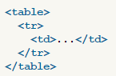

Лабораторная работа Григорьевой А. (ИДБ-13-12)
Мои задачи:
- Создать личную страницу на Github
- Создать Wiki-страницу о тэге html <table>
- Создать SPA
HTML.Table
Элемент <table> служит контейнером для элементов, определяющих содержимое таблицы. Любая таблица состоит из строк и ячеек, которые задаются с помощью тегов <tr> и <td>. Внутри <table> допустимо использовать следующие элементы: <caption>, <col>, <colgroup>, <tbody>, <td>, <tfoot>, <th>, <thead> и <tr>.
Синтаксис:

Атрибуты:
- align
- Определяет выравнивание таблицы.
- background
- Задает фоновый рисунок в таблице.
- bgcolor
- Цвет фона таблицы.
- border
- Толщина рамки в пикселах.
- bordercolor
- Цвет рамки.
- cellpadding
- Отступ от рамки до содержимого ячейки.
- cellspacing
- Расстояние между ячейками.
- cols
- Число колонок в таблице.
- frame
- Сообщает браузеру, как отображать границы вокруг таблицы.
- height
- Высота таблицы.
- rules
- Сообщает браузеру, где отображать границы между ячейками.
- summary
- Краткое описание таблицы.
- width
- Ширина таблицы.
Пример использования:
Таблица умножения от 1 до 4
| |
1 |
2 |
3 |
4 |
| 1 | 1 | 2 | 3 | 4 |
| 2 | 2 | 4 | 6 | 8 |
| 3 | 3 | 6 | 9 | 12 |
| 4 | 4 | 8 | 12 | 16 |
SPA "Часы"